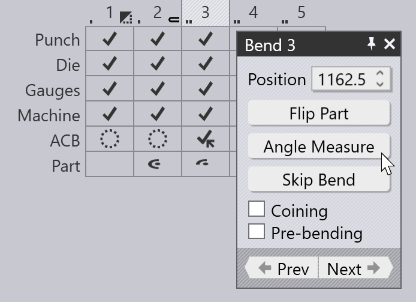
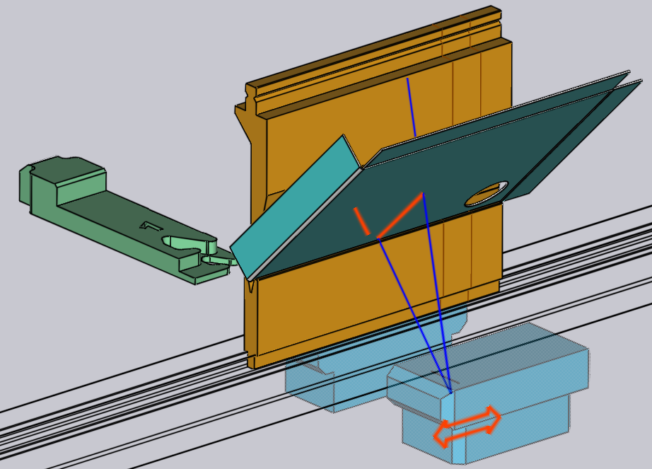
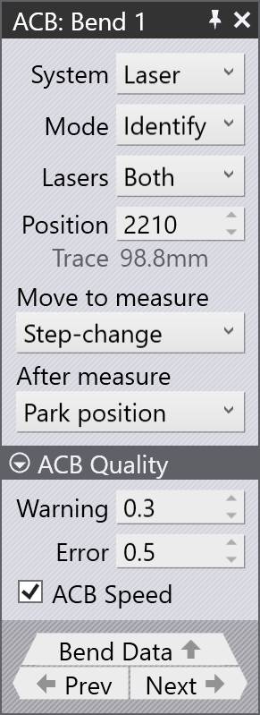
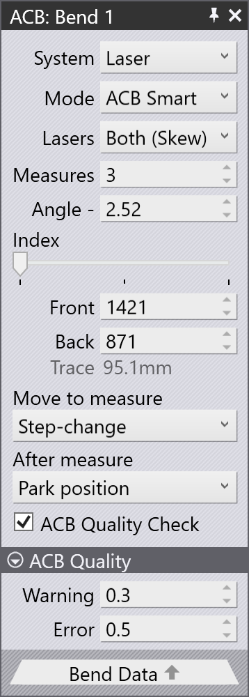
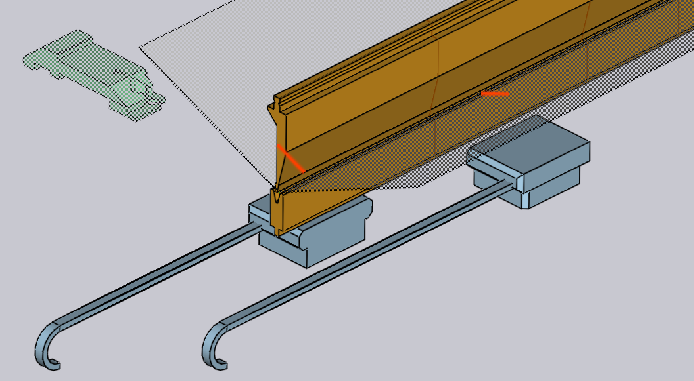

Edit angle measurement
If the press brake is configured with angle measurement systems such as ACB or LCB, TecZone Bend will use them to improve the accuracy of bent angles. The Angle Measurement page explains more about this process.
This page explains the editing operations available when laser based angle measurement is being used. If a sensor disk based measurement system is being used, those settings can be edited by just clicking on the punch mount containing the sensor disk segment.
Editing laser ACB

You can open the ACB panel, where the ACB settings are edited in one of these ways:
-
Click twice on a bend number in the navigator to open the bend panel, and then click on the Angle Measure button (this is displayed only if the machine has some angle-measurement system configured).
-
Click on any of the cells in the ACB row of the navigator.
-
Click on one of the ACB sensors, if they are in view (see image below).
During the simulation, the ACB sensors are displayed as they come into the measurement
position and image the part. The actual laser lines as imaged by the camera are projected
on the part (in orange). These lines are also displayed and updated in real-time as you
interactively edit the sensor positions. During interactive editing, moving the mouse over the
front or rear sensor displays some annotations like this: 
The orange traces on the sheet indicate the actual trace lengths available. You can click on the sensor and drag it, and the lines are updated immediately (taking into account holes, formings, shadowing by the dies or gauges). The blue lines indicate the upper and lower limits of the laser sweep (these are displayed only as long as the mouse is over one of the front or rear sensors).
ACB panel

The image alongside shows a typical display from the ACB panel.
-
The System selector lets you switch between Laser and Disk measurement systems, and is displayed only if the machine has both systems installed.
-
The Mode is one of the identification modes discussed in the section ACB Methods. When ACB Smart mode in this list is selected, additional options Angle and ACB Quality Check are displayed.
-
The Lasers list lets you choose if both the lasers are used for the measurement (the default). In some cases, you can decide to use only the front or the rear lasers. The option Both (Skew) in this list is used when you want to use both the lasers, but need to position the front and rear lasers separately (see image below).
-
The Angle option is used to enter the correction value.
-
The Position input sets the Z position for laser measurement (in machine coordinates). As you change this, you can see the ACB sensor move, the laser trace getting recomputed and possibly some warnings and errors related to trace length appear/disappear in the navigator, all in real-time.
-
The Trace display shows the laser trace available for measurement. In general, the front and rear traces may vary in length; this displays the minimum.
-
The Move to measure setting controls when the ACB laser sensors moves to the measurement position. Typically, they move into position during the step change phase (when we are switching from the previous bend to this one), but sometimes that can make it difficult to insert the part. In this case, you can opt to have the sensors move into position only when the punch has reached the mute-point at the start of bending.
-
The After measure setting controls where the ACB laser sensors move to after the measurement is complete. If the sensors are not going to be used any more, they typically go back to their park position, and if they are needed for subsequent bends, they remain at their current position.
-
The ACB Quality Check option is used to enable or disable the quality check feature. When enabled, the bend will be checked against the quality thresholds defined in the ACB quality settings.
ACB quality settings

-
The Warning and Error settings define threshold values. If the measured angle deviation goes beyond these thresholds, the controller will alert the operator with a warning or error message.
-
The ACB Speed feature increases production efficiency when making multiple parts by measuring spring-back only on the first part and applying that value to all following parts. You can enable or disable ACB Speed individually for each bend.
The panel above shows only one measurement (the bend line length was too short to permit multiple measurements). If the bend line length is longer, TecZone Bend will use more measurements. You may then see a display like the one alongside:
-
In this example, we have set the Lasers setting to Both (Skew), and so the Position input is split to display separate Front and Back positions.

-
The Measures input displays the number of measurements to take; this is set to the optimum value computed by TecZone Bend (based on the bend length). In this example, TecZone Bend has opted to do 3 measurements, but you can decrease this all the way down to 1.
-
The Index slider is used to select one of the 3 measurements to edit. As you move this slider, the corresponding position is displayed in the Front and Rear input boxes, and can be edited. The simulation also moves the sensor to the corresponding measurement position.